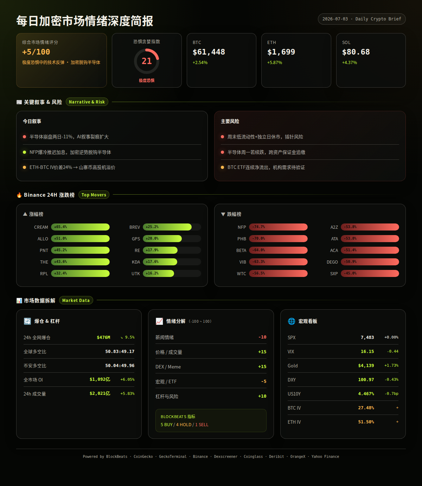
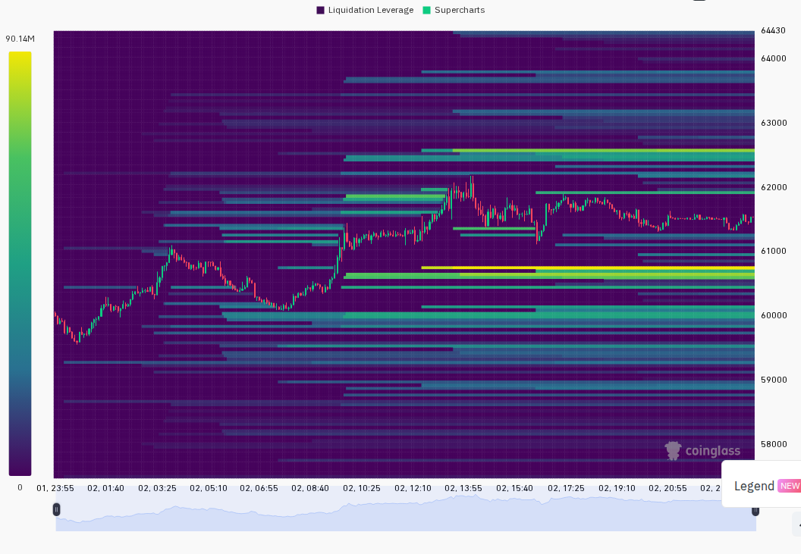
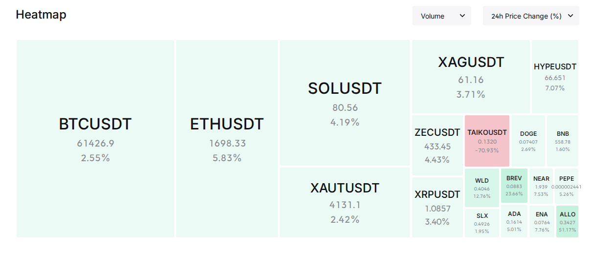

半导体重挫加密货币逆势突围：极度恐惧中BTC突破$62,000，NFP爆冷改写加息时间表
市场处于极度恐惧（21）但加密货币出现逆势反弹，BTC从$59,588反弹至$62,000区域，ETH/SOL同步走强。核心驱动为非农数据大幅不及预期（+57K vs 预期110K）推动加息预期从10月推迟至12月，叠加美元走弱和半导体崩盘引发资金轮动至加密资产的叙事。短期情绪修复但持续性取决于周末流动性环境和下周一亚洲市场开盘情况。（multi-source, analysis）
━━━━━━━━━━━━━━━━━━━━━━
⏰ 1. 24小时变化:
恐惧与贪婪指数 21 · 极度恐惧
BTC $61,448 +2.54%
ETH $1,699 +5.87%
SOL $80.68 +4.37%
VIX 16.15 -0.44 正常区间
成交量 $202B +5.83%
DXY 100.97 -0.43%
爆仓 $476M -9.50%
━━━━━━━━━━━━━━━━━━━━━━
—— BTC / ETH / SOL ——
加密市场在传统风险资产暴跌中表现出色，ETH领涨（+5.87%），出现明显的"加密脱钩半导体"叙事。
信息 1: BTC一度突破$62,000，24小时涨幅5.2%；ETH突破$1,700，24小时涨幅7.8%。ETH/BTC比率走强，反映山寨币情绪回暖。（BlockBeats, Binance）
信息 2: 以太坊巨鲸「sat0shi777」近$9,000万ETH空头仓位部分被清算，成为ETH反弹的催化剂之一。该鲸鱼声称90%胜率，已归还ETH空头全部利润。（BlockBeats）
信息 3: Grayscale向Coinbase Prime存入11,421 ETH和814.341 BTC，合计超$7,000万。BlackRock ETF向Coinbase发送4,917 BTC（约$3.01亿）。（BlockBeats）
信息 4: 昨日美国BTC现货ETF净流出$2.96亿，ETH现货ETF净流入。比特币长期持有者转为净积累，散户领衔抄底但最大鲸鱼仍在观望。（BlockBeats）
信息 5: SOL突破$80，24小时涨幅超6%。Robinhood与Arbitrum合作推出链上交易平台Rialto。（BlockBeats）
—— 宏观 / 地缘政治 ——
非农数据大幅不及预期成为24小时内最重要的宏观催化剂，加息时间表推迟强化了风险资产的短期支撑。但半导体崩盘和伊朗地缘风险构成双重重压。
信息 6: 美国6月季调后非农就业仅+5.7万，大幅不及预期的11万。失业率4.2%（预期4.3%）。市场将加息预期从10月推迟至12月。数据公布后美股期货快速拉升，现货黄金急涨。（BlockBeats）
信息 7: 费城半导体指数两日暴跌11%，存储板块领跌。SanDisk跌超14%，SK海力士跌9.73%，韩国KOSPI暴跌近8%触发熔断。「大空头」Michael Burry做空美光科技（$1,051入场），称韩国芯片投资为「泡沫开端」。（BlockBeats）
信息 8: 美国与伊朗完成新一轮间接谈判，美方要求伊朗放弃对霍尔木兹海峡收费。伊朗海上原油库存升至5,800万桶，超90%未售出。伊朗军方警告：任何在哈梅内伊葬礼期间的攻击将遭「严厉报复」。下一轮美伊会谈定于7月18日。（BlockBeats）
信息 9: 美元指数（DXY）降至100.97，24小时跌0.43%。美债10年期收益率4.467%，微降0.7bp。SPX报7,483点，24小时基本持平（市场休市前）。黄金升至$4,138.80，24小时涨1.73%，反映避险需求上升。（BlockBeats DXY/US10Y, Yahoo Finance）
信息 10: 韩国股市单日蒸发约579万亿韩元，KOSPI暴跌近8%。日本股市同样承压，韩国和日本半导体股领跌亚洲。（BlockBeats）
—— AI / 半导体叙事 ——
半导体板块正经历2024年以来最严重的抛售，AI叙事出现裂痕但机构分歧明显。高盛认为AI泡沫论为时过早，而Burry持续加大做空力度。
信息 11: Meta抛售闲置算力引发AI硬件动能交易瓦解，带动整个AI板块抛售。高盛表示AI交易仍受盈利支撑，泡沫论为时过早。摩根大通则警告当前AI交易内部分化类似1999年互联网泡沫前夕。（BlockBeats）
信息 12: Anthropic计划自研AI芯片，正与三星洽谈2nm制程制造。OpenAI考虑向特朗普政府提供5%股权。NVIDIA推出「AI算力合作伙伴计划」，以算力换取云提供商收入分成。（BlockBeats）
信息 13: 软银成立「SB Neo」进入美国Neocloud市场，计划建设10GW AI基础设施。数据中心运营商Switch启动$20亿私募融资，a16z领投。（BlockBeats）
信息 14: Palantir CEO公开抨击OpenAI、Anthropic等前沿AI实验室「只追求代币最大化」，David Sacks力挺：真正的企业AI安全在于拥有自己的数据、模型和算力。（BlockBeats）
—— 值得关注的标的 ——
Binance 涨幅榜 (USDT):
· CREAM +65.4%
· ALLO +51.0%
· PNT +45.2%
· THE +43.6%
· RPL +32.4%
· BREV +25.2%
· GPS +20.0%
· RE +17.9%
· KDA +17.6%
· UTK +16.2%
跌幅榜:
· NFP -74.7%
· PHB -70.0%
· BETA -64.0%
· VIB -63.3%
· WTC -56.5%
· A2Z -53.8%
· ATA -53.8%
· ACA -51.4%
· DEGO -50.9%
· SXP -45.0%
—— 融资 / VC ——
信息 15: 加密友好银行Erebor Bank寻求融资，估值至少$80亿。（BlockBeats）
信息 16: 区块链矿业公司Ionic Digital完成$4亿融资，已提交纳斯达克上市申请。（BlockBeats）
信息 17: 2026上半年融资排行榜出炉，Kalshi和Polymarket合计融资$18亿。预测市场赛道持续吸金。（BlockBeats）
信息 18: AI驱动的Web3基础设施层Canopy完成$850万种子轮融资，Arrington Capital参投。Metal完成种子轮融资，Airwallex和Capital49联合领投。（BlockBeats）
信息 19: Hamilton Lane直接股权共同投资基金VI完成$38亿募资。数据中心运营商Switch启动$20亿私募。（BlockBeats）
—— X/Twitter KOL 信号 ——
信息 20: 过去24小时3个X List共抓取526条推文，耗时263秒。代币讨论集中在$MU（3次/3人）、$POLY（2次/2人，偏多）、$GLW（2次/1人，偏多）、$BTC（2次/2人，偏多）、$HYPE（2次/2人，分歧）。$MU讨论量最高但非加密原生代币，反映半导体崩盘传导至加密圈关注。（X Lists, analysis）
信息 21: 叙事分布：其他未分类47%、CRYPTO市场19%、AI/Agent 18%、股票/传统市场3%、地缘政治3%、宏观/监管2%。AI/Agent叙事连续高占比（18%），与链上ANSEM meme热潮和AI半导体崩盘形成交叉验证。值得注意：传统市场讨论占比上升（3%→17条），反映加密圈对股票市场的高度关注。（X Lists, analysis）
信息 22: $POLY和$BTC出现多人偏多讨论，适合作为下一步交叉验证对象：检查价格是否未启动、成交量是否刚放大、funding/OI是否未过热。$HYPE出现分歧信号（2人看多vs看空），需关注Hyperliquid生态近期是否有催化剂。（X Lists, analysis）
━━━━━━━━━━━━━━━━━━━━━━
风险 1: 半导体崩盘向加密市场传导
半导体指数两日跌11%，若下周一亚洲开盘继续抛售，可能引发跨资产保证金追缴，迫使机构减持BTC/ETH等流动性好的资产回补。
观察: 下周一韩国KOSPI开盘表现、美光科技（MU）是否继续破位、MicroStrategy（MSTR）是否跟随下跌。
失效条件: 半导体企稳反弹，MSTR维持+7.9%涨幅，加密与半导体脱钩叙事被市场接受。（BlockBeats, analysis）
──────────────────────
风险 2: 周末低流动性 + 7月4日美国独立日休市
7月4日（周五）美股休市，周末加密市场流动性极薄，容易出现低成交量下的剧烈波动。历史数据显示长假前后常出现插针行情。
观察: BTC是否守住$60,000整数关口，SOL和ETH是否出现异常的盘中波动。
失效条件: 周末横盘窄幅震荡，成交量无明显异动，下周一正常开盘。（analysis）
──────────────────────
风险 3: 美伊地缘冲突升级
伊朗军方在哈梅内伊葬礼期间发出强硬警告，霍尔木兹海峡局势紧张。若冲突升级，油价飙升将重新点燃通胀担忧，逆转当前的降息预期。
观察: 7月18日美伊下一轮会谈前的军事动态、WTI原油价格是否突破$80。
失效条件: 美伊会谈确认如期举行，双方释放缓和信号。（BlockBeats）
──────────────────────
风险 4: ETF持续流出的积累效应
BTC现货ETF连续净流出（昨日$2.96亿），虽然ETH ETF转为净流入，但BTC ETF流出若持续将压制价格上行空间。
观察: 下周ETF流量数据，尤其是BlackRock和Fidelity的BTC ETF是否转为净流入。
失效条件: BTC ETF单日净流入超$1亿，机构需求恢复。（BlockBeats）
非财务建议声明: 本报告仅提供市场数据和情绪分析，不构成任何买卖建议。
━━━━━━━━━━━━━━━━━━━━━━
· 7月3日（周五）— 美国独立日假期，美股休市 — 低流动性环境，注意异常波动（BlockBeats）
· 7月6日（下周一）— 亚洲市场开盘（韩国、日本、香港）— 检验半导体崩盘是否延续，加密脱钩叙事面临验证（analysis）
· 7月8日（下周三）— 美国CPI数据发布 — 影响美联储利率路径和风险资产定价（analysis）
· 7月18日 — 美伊下一轮间接会谈 — 地缘风险关键节点（BlockBeats）
━━━━━━━━━━━━━━━━━━━━━━
综合评分: +5/100 (谨慎偏乐观 · 极度恐惧中的技术反弹)
5 个维度:
新闻情绪: -10/100 — NFP爆冷提供宏观利好，但半导体崩盘、伊朗地缘紧张和ETF持续流出构成压力。加密相关新闻偏中性，多空交织。（BlockBeats, analysis）
价格/成交量: +15/100 — BTC/ETH/SOL全线上涨，ETH领涨（+5.87%），成交量环比+5.83%。反弹质量尚可但非放量突破。（Binance, CoinGecko, Coinglass）
DEX/meme 活跃度: +15/100 — Solana链上meme活跃，ANSEM领衔（$15M日成交量），但多数池子流动性极低（< $10万），属于高风险投机活动。（GeckoTerminal）
宏观/ETF/流动性: -5/100 — DXY走弱（-0.43%）利好，但黄金急涨（+1.73%）释放避险信号，SPX持平，BTC ETF净流出。宏观面多空交织。（Yahoo Finance, BlockBeats）
杠杆与风险: +10/100 — 资金费率中性偏低（BTC 0.01%, ETH 0.0078%），爆仓量下降（-9.50%），多空比接近50:50，OI温和增长（+6.05%），杠杆环境健康。（Coinglass, Binance）
BlockBeats Bottom/Top Indicator:
整体市场流动性: Buy | BTC流动性: Buy | ETH流动性: Hold | 24h累积BTC LIQ: Buy | 合约多空比偏离: Caution | 山寨币抗跌: Sell | 市场LIQ(BTC计价): Hold | Bitfinex溢价: Hold | USDC/USDT溢价: Buy | Binance USDT借贷利率: Buy | OI加权资金费率: Hold
→ 5 Buy / 1 Sell / 4 Hold / 1 Caution，买入信号占优，与极度恐惧指数形成背离。（BlockBeats）


以下为基于多源数据交叉验证的概率情景分析：
情景 1 (概率: 35%, 置信度: 中):
半导体崩盘加速资金轮动至加密 — BTC收复$63,000-$65,000区间
AI/半导体资金外溢至加密市场，配合NFP爆冷推迟加息预期。ETH因"DeFi+机构采用"叙事获得超额收益，ETH/BTC比率继续走强。SOL受益于meme活跃度和Robinhood合作继续跑赢大盘。
关键条件: 下周一亚洲开盘半导体继续下跌但MSTR/COIN维持涨势；BTC ETF转为净流入。
若发生则 BTC目标$63,500-$65,000，ETH目标$1,780-$1,850，SOL目标$84-$87。（multi-source, analysis）
情景 2 (概率: 45%, 置信度: 高):
周末低流动性区间震荡 — BTC在$59,500-$62,000横盘整理
独立日假期低流动性环境下，市场缺乏方向性催化剂。BTC守住$60,000整数关口但无力突破$62,000阻力。ETH在$1,650-$1,720整理。ALT跟随大盘窄幅波动，SOL链上meme保持活跃但无法带动整体趋势。
关键条件: 周末无重大新闻事件；BTC在$60,000以上持稳；DXY维持在101以下。
若发生则 BTC区间$59,500-$62,000，ETH区间$1,650-$1,720。（multi-source, analysis）
情景 3 (概率: 20%, 置信度: 中低):
半导体恐慌蔓延至全风险资产 — BTC回测$58,000支撑
若半导体抛售在下周一加速，触发跨资产保证金追缴和风险平价基金减仓，加密将无法幸免。极度恐惧指数（21）尚未到极端底部的历史均值（通常<15才确认），有进一步下探空间。
关键条件: 韩国KOSPI周一继续暴跌超3%；MSTR/COIN转为下跌；BTC ETF单日净流出超$3亿。
若发生则 BTC目标$57,500-$58,500，ETH目标$1,560-$1,600。（multi-source, analysis）
━━━━━━━━━━━━━━━━━━━━━━
· BTC: $61,448，24h +2.54%，成交量$13.05亿，高低区间$59,588-$62,200。从$59,588低点反弹至$62,200后回落整理，在$61,200-$61,600窄幅震荡。短期阻力$62,200，支撑$60,000。（Binance）
· ETH: $1,699，24h +5.87%，成交量$6.21亿，高低区间$1,597-$1,725。ETH领涨三大主流币，从$1,597低点强劲反弹至$1,725，表现强于BTC。或受鲸鱼空头回补和ETF净流入双重推动。（Binance, BlockBeats）
· SOL: $80.68，24h +4.37%，成交量$3.00亿，高低区间$76.90-$82.78。SOL在$82区域遇阻回落，SOL链上meme活跃度（ANSEM $15M日成交）提供额外买盘支撑。（Binance, GeckoTerminal）
· 全球总市值: $2.21万亿（CoinGecko）
· 爆仓数据: 24h $4.76亿，较前日下降9.50%。市场杠杆清理接近尾声。（Coinglass）
· OI 与成交量: 总OI $1,091.8亿（+6.05%），24h成交量$2,020.7亿（+5.83%）。OI温和增长配合成交量上升，属于健康的杠杆重建。（Coinglass）
· 宏观看板: SPX 7,483点（+0.00% 24h, +1.76% 5d）/ VIX 16.15（-0.44, 正常区间）/ DXY 100.97（-0.43%）/ US10Y 4.467%（-0.7bp）/ Gold $4,138.80（+1.73%）。（Yahoo Finance, BlockBeats）
· 期权波动率: BTC ATM IV 27.48%（低波动区，<40%），ETH ATM IV 51.5%（正常区，40-60%）。ETH-BTC IV价差24.02%（>15%阈值），显示山寨币投机溢价显著，市场对ETH的波动预期远高于BTC。（Deribit）
以下基于 CoinGecko trending + DEX 数据交叉验证：
ANSEM (Solana):
$0.168，24h +9.4%，市值$6,986万。
DEX: 流动性$157万-$164万，24h成交量$1,511万-$746万（两个主要池子），交投极其活跃。
催化剂: Meme币ANSEM创历史新高（市值一度触及$1.9亿），Ansem本人持仓价值飙升至$1亿。在半导体崩盘日成为链上资金避险出口。
风险: Meme代币本质高波动，市值已高估，无基本面支撑。类似meme通常在ATH后快速回落。（CoinGecko, GeckoTerminal, BlockBeats）
PENGU (Ethereum):
$0.0063，24h +3.2%，市值$3.98亿。
DEX: 未检索到Solana高流动性DEX池，主流交易在CEX。
催化剂: Pudgy Penguins持续作为Crypto文化符号获得关注，NFT底价上涨（Milady +9.8%, CryptoPunks +8.8%, Mad Lads +8.2%），NFT市场整体回暖。
风险: 代币经济模型通胀压力，NFT流动性差。（CoinGecko）
GRASS (Solana):
$0.513，24h +10.1%，市值$3.24亿。
DEX: 搜索中未发现> $10万流动性的Solana DEX池，主要流动性可能在CEX。
催化剂: Grass作为DePIN赛道代表持续受到关注，AI+数据叙事支持。
风险: 中等市值代币，流动性依赖CEX做市商。（CoinGecko）
WLD (Worldcoin):
$0.401，24h +11.4%，市值$14.07亿。
催化剂: 与AI/身份验证叙事关联，受益于AI赛道关注度提升。
风险: 代币解锁压力、隐私监管风险。（CoinGecko）
━━━━━━━━━━━━━━━━━━━━━━
· GeckoTerminal Solana trending pools (24h 成交量 > $1M):
1. ANSEM/SOL: 成交量$15,113,509，+9.4%，流动性$1,567,576（GeckoTerminal）
2. manlet/SOL: 成交量$6,708,407，+763.2%，流动性$119,009（GeckoTerminal）
3. RUSH/SOL: 成交量$6,396,029，+187.4%，流动性$28,521（GeckoTerminal）
4. LojakPaul/SOL: 成交量$5,176,614，+7,645.7%，流动性$151,069（GeckoTerminal）
5. ELON/SOL: 成交量$4,640,770，+1,369.8%，流动性$62,906（GeckoTerminal）
6. DR TRUMP/SOL: 成交量$4,559,471，+94.3%，流动性$25,704（GeckoTerminal）
7. BULLTANIC/SOL: 成交量$3,226,213，-99.1%，流动性$5,146（GeckoTerminal）
8. world/SOL: 成交量$2,546,837，-13.3%，流动性$244,515（GeckoTerminal）
9. FROGBULL/SOL: 成交量$2,478,409，-7.1%，流动性$75,605（GeckoTerminal）
10. Jotchua/SOL: 成交量$2,264,197，-10.1%，流动性$752,080（GeckoTerminal）
11. RTM/SOL: 成交量$2,010,300，+62.7%，流动性$195,181（GeckoTerminal）
12. CATWIF/USDC: 成交量$1,715,968，+44.8%，流动性$196,350（GeckoTerminal）
13. TROLL/SOL: 成交量$1,463,234，+4.5%，流动性$3,107,215（GeckoTerminal）
14. yep/SOL: 成交量$1,339,095，+67.4%，流动性$77,257（GeckoTerminal）
15. BAG/SOL: 成交量$1,085,873，-6.7%，流动性$19,012（GeckoTerminal）
16. LR/SOL: 成交量$1,087,876，-38.7%，流动性$64,336（GeckoTerminal）
· BlockBeats Solana top10_netflow:
1. CBBTC (Coinbase BTC): 净流入$102万，市值$53.97亿（BlockBeats）
2. JUP: 净流入$59.5万，市值$7.69亿（BlockBeats）
3. MET (Meteora): 净流入$45.3万，市值$9,709万（BlockBeats）
4. SNDK (SanDisk): 净流入$42.8万，市值$155万 — 与半导体崩盘日SanDisk股票暴跌14%形成反差，链上SNDK反而获资金流入（BlockBeats）
5. ZEC: 净流入$39.0万，市值$3,234万 — 有鲸鱼$400万买入ZEC现货并持有$500万多头（BlockBeats）
· 备注:
Solana链上meme仍然极度活跃但结构不健康：大部分热门池子流动性低于$20万（如BULLTANIC $5,146、DR TRUMP $25,704、RUSH $28,521），属于极高风险的对赌游戏。ANSEM是少数既有流动性（>$150万）又有成交量的meme。ZEC和JUP的链上净流入值得关注，可能与做市商或机构布局有关。极度恐惧指数（21）与BlockBeats指标（5 Buy / 1 Sell）形成背离，历史上这种背离往往是中期底部的信号，但短期波动风险不可忽视。